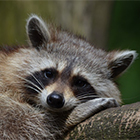
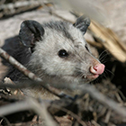

THE TEAM.
Thank you for visiting! As a team we hope, we were able to educate you, the viewer, on the dangers of blacklegged ticks and the creation process of our interactive web map. The animals that are pictured below (before our given names), are those that hinder the prevalence and rise of blacklegged ticks. These specific animals have been actively found to aid in the decrease of the blacklegged tick population: raccoons, opossums, barred owls, bobcats, coyotes, and foxes ‒ some, which are native to Ontario.

Aida Tuhcic
Applications Specialist.

Bharat Bharat
Applications Specialist.
Mansi Shivang Shah
Cartographic Specialist.

Sunayana Sashikumar
Applications Specialist.